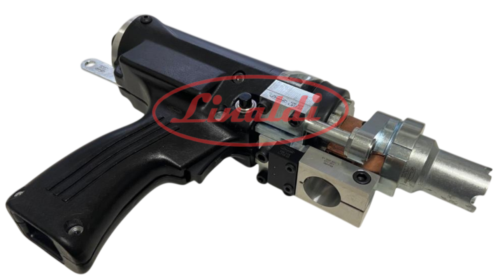
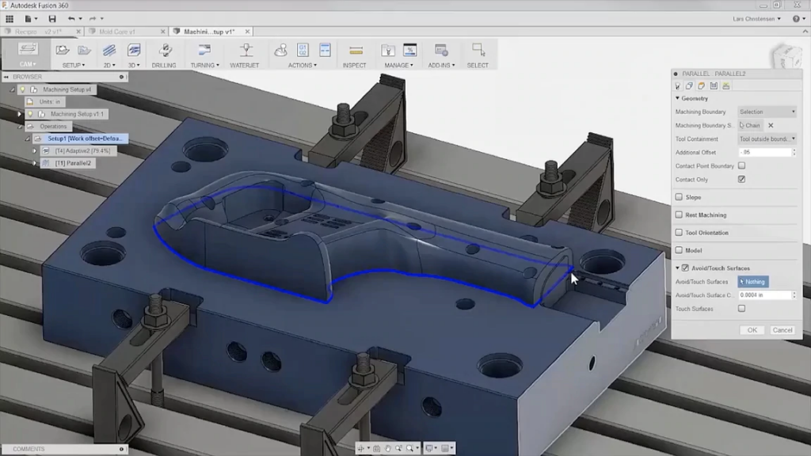

Bem-vindo a LINALDI, sua parceira confiável em soluções de soldagem de alta qualidade. Com mais de 20 anos de experiência e compromisso com a excelência, oferecemos uma ampla gama de produtos e serviços para atender às suas necessidades de soldagem. Desde peças de Stud Weld até serviços personalizados, estamos aqui para impulsionar o sucesso das suas operações de soldagem. Explore nosso site para descobrir como podemos tornar a soldagem mais simples e eficiente para você.

Linha de suprimentos de solda pino de alta qualidade que garantem processos sólidos e duráveis em aplicações industriais.
Explore a variedade de produtos que oferecemos, abrangendo diversos setores de solda pino para assegurar processos robustos e confiáveis.
Oferecemos serviços de usinagem e/ou nacionalização de peças importadas com foco na qualidade e redução de custos.
Efetuamos a manutenção preventiva e corretiva em equipamentos para os processos de solda pino.
A Linaldi é referência em suprimentos para processos industriais, unindo experiência técnica, qualidade e confiabilidade no fornecimento de suprimentos e serviços especializados. Atuamos com foco em eficiência e desempenho, oferecendo produtos de alto padrão e suporte técnico qualificado para atender às demandas de diferentes setores industriais.
Mais do que fornecedores, somos parceiros estratégicos dos nossos clientes. Nosso compromisso é entregar soluções sob medida, com agilidade, inovação e excelência em cada projeto, contribuindo diretamente para a produtividade e o sucesso das operações.
Saiba mais
Nossa equipe tem experiência em manutenção preventiva e corretiva para equipamentos de solda pino, garantindo a eficiência e a confiabilidade de suas operações. Além disso, oferecemos serviços de usinagem personalizados, incluindo a nacionalização de peças importadas, com foco na qualidade e redução de custos. Contamos com processos fabris modernos para desenvolver produtos sob medida, assegurando a mais alta qualidade em todas as etapas do projeto.
Ver serviçosHorário de funcionamento:
Segunda à Quinta: 07:00 às 12:00 — 13:00 às 17:00
Sexta: 07:00 à 12:00 - 13:00 às 16:00
(Exceto sáb, dom e feriados)
Endereço:
Rua Dilermando Reis, 223-225 - Jd. Ubirajara - Cep 04458-030 - São Paulo - SP
Telefone:
+55 (11) 5615-3799 | +55 (11) 98761-8759 | +55 (11) 91184-6476
E-mail: